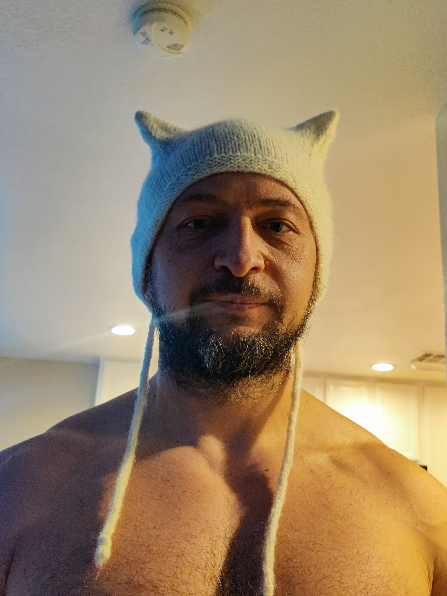

Denis Nikulin

Contact Info
About Me
Summary of Qualifications
- PMP-certified Project Manager with proven expertise in Waterfall and Agile methodologies.
- Skillful leader with success in team development and productivity enhancement (increased output by 15%, improved retention by 20%).
- Adept in strategic test plan development, execution, and defect management for complex software projects.
- Proficient in risk assessment, mitigation, stakeholder management, and conflict resolution.
- Hands-on technical background in C++, Python, Linux, and core testing tool sets.
Professional Experience
Motional
Test Manager
Senior Engineer
Aristocrat Technologies, Inc
Project Manager
Senior QA/ QC Engineer
Technical Skills
Education